Folio 设计改进 · 对比稿
一共 12 项。每项左边是 App 现在的样子，右边是建议改成的样子，下面用一两句话说明为什么。截图都来自真实运行的 App；右边的「建议」是在同一个页面上直接改出来的效果，用来确认方向，不是最终视觉稿。
2026-11-03 结论：12 项全部采用。细节以设计文档 docs/superpowers/specs/2026-11-03-folio-polish-design.md 为准，例如第 7、9 项菜单中的「在 Finder 中显示」已去掉，改为只用于整个相册库。
一 · 打开 APP 之后
1打开 App 就看到自己的相册改动小
相册管理工具每天打开都是为了看照片，第一屏应该是你的相册，而不是产品介绍。
现在
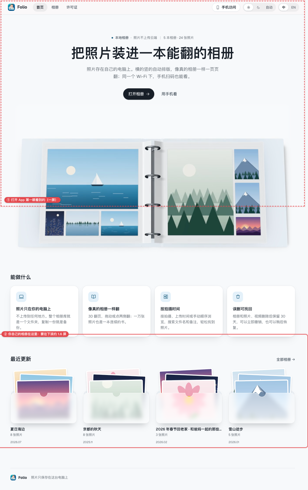
1每次打开都先进「首页」：口号、演示动画、功能介绍占满第一屏（虚线框就是窗口能看到的范围）。
2你自己的相册在最下面，要往下滚约 1.6 屏才能看到。这一页更像官网，适合第一次了解产品，不适合每天用。
建议
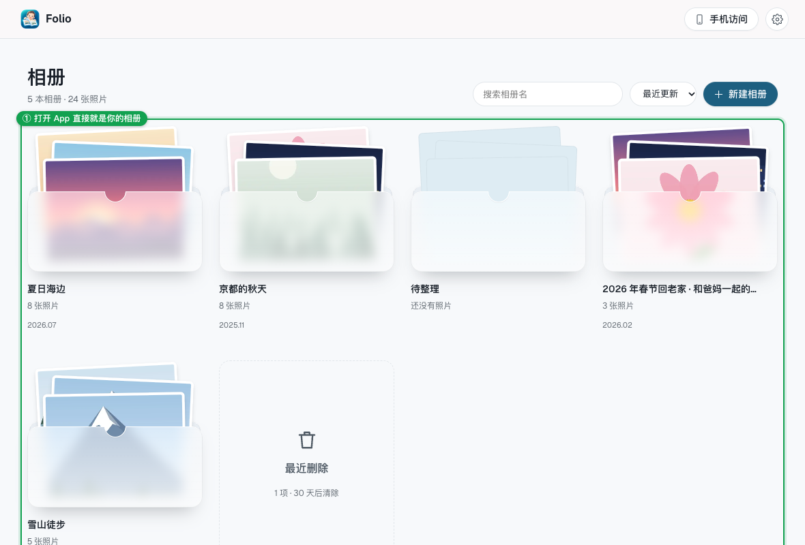
1打开直接进「相册」。
首页上的介绍不浪费：改成还没有任何相册时的欢迎页（见第 10 项）。手机扫码打开时也直接进相册。
2顶栏精简，设置集中到一个地方改动中
顶栏应该只放常用的东西；设一次就不再动的选项，收进「设置」。
现在
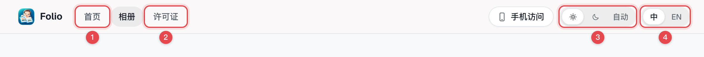
英文界面、窗口缩到最小宽度（720px）时：
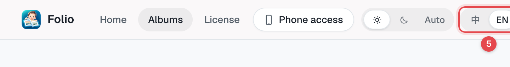
- 1「首页」：见第 1 项，不需要单独一个标签。
- 2「许可证」：一般只在激活、续期时用一次。
- 34 主题和语言开关：设一次就不动了，却一直占着顶栏。
- 5英文界面在最小窗口宽度下放不下，右边的「EN」被挤出窗口。
建议
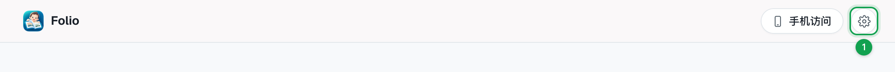
同样是英文、720px，放得下：
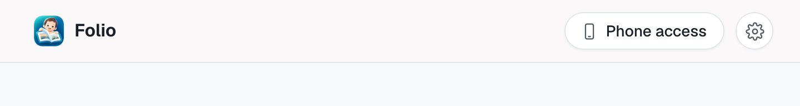
点齿轮（Mac 上也可以按 ⌘,）打开「设置」：
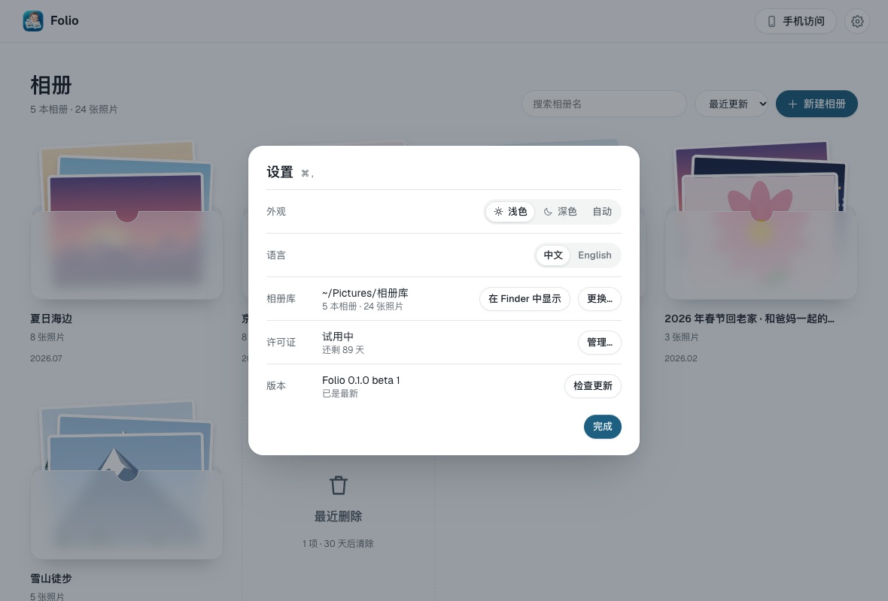
1顶栏只留 Logo、「手机访问」和一个齿轮。外观、语言、相册库位置、许可证、版本更新都放进「设置」。现在藏在 Mac 菜单栏里的「选择相册库」等也一起放进来。
3「上传」改叫「添加照片」改动小 · 只改文字
同一个 App 里，一边说「不上传」，一边让你点「上传」，会让人担心照片被传到网上。
现在
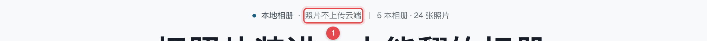
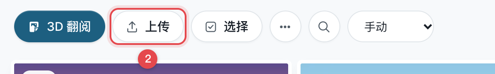
1首页写着「照片不上传云端」。
2相册页的按钮却叫「上传」。
建议
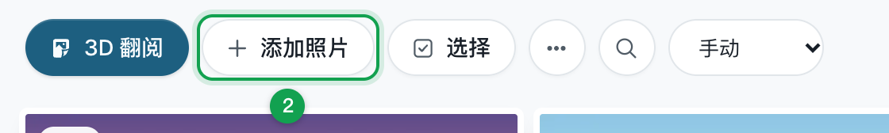
2电脑上一律叫「添加照片」（英文 Add photos）。
只有在手机上把照片传到电脑时，才叫「上传到电脑」。
二 · 3D 相册
43D 相册封面的标题要看得清改动小
3D 翻阅是 Folio 最有特色的地方，合上时的封面就是它的「门面」。
现在
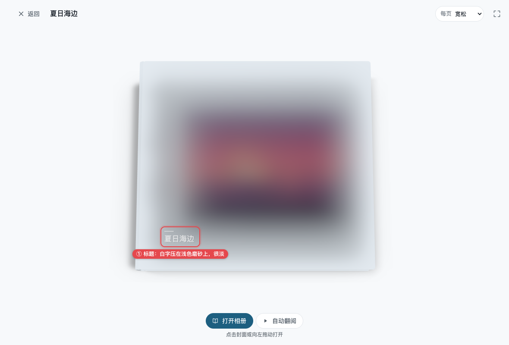
1标题是白色半透明字，压在浅色磨砂封面上，几乎看不见。
文字和背景的对比度只有约 1.3（数字越大越清楚，一般至少要 4.5）。
建议
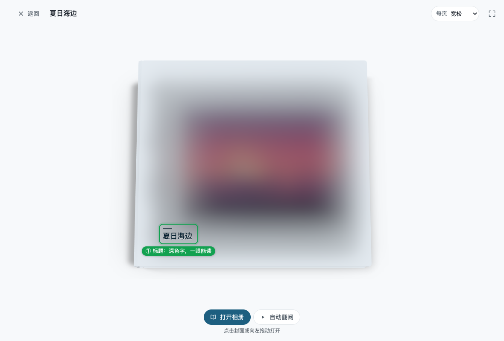
1标题改成深色字，对比度约 9，一眼能读。
以后还可以考虑把相册的「封面照片」贴到封皮上（这次先不做）。
53D 页面上的小字放大，中文不用斜体改动小
扉页上的日期和照片下的备注，在默认窗口大小下只有 8–10 像素高，读起来吃力。
现在
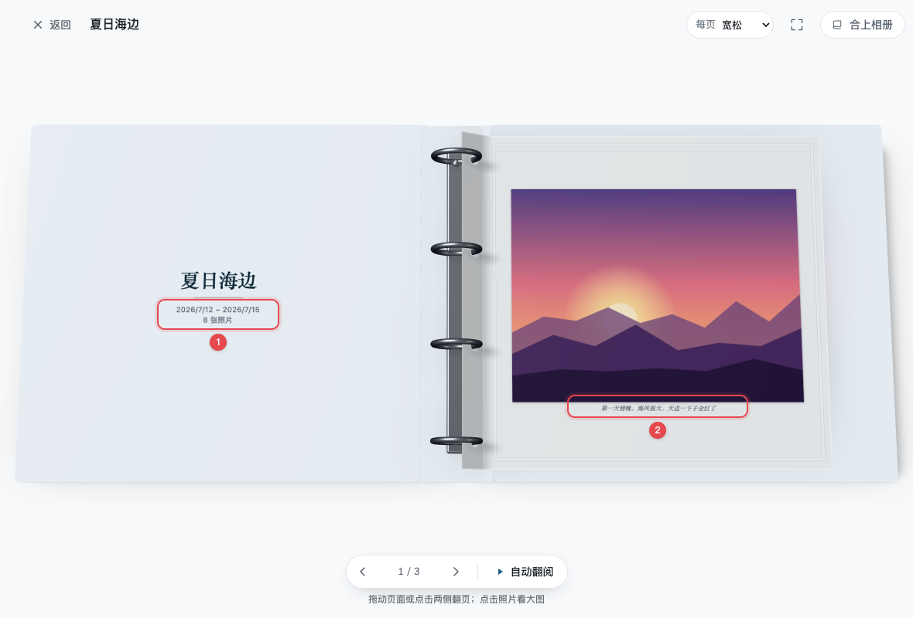
放大看：
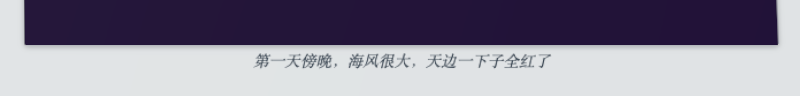
1扉页的日期和数量：约 10 像素。
2照片下的备注：约 8 像素，而且是斜体。中文字体没有真正的斜体，只能被硬拉斜，看起来是歪的。
建议
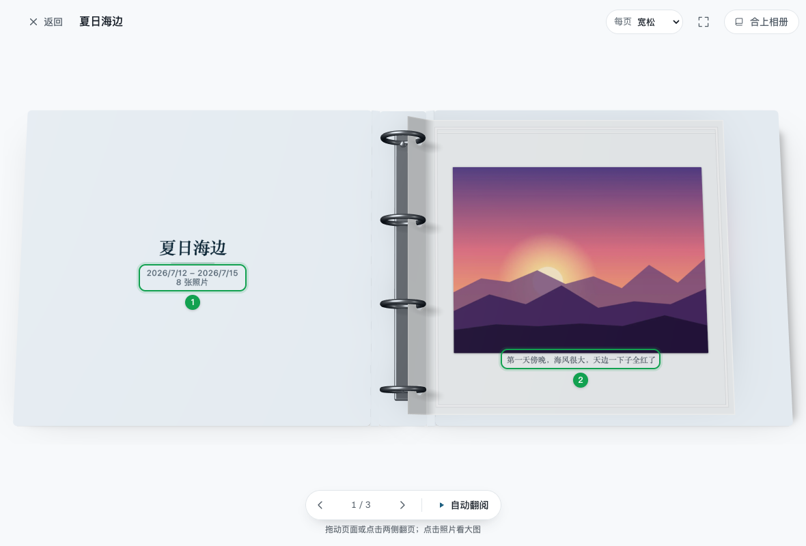
放大看：
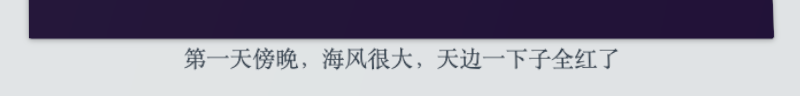
12都放大到约 12 像素；备注改成正常的直体字。照片会相应缩小一点点，给备注留出位置。
6日期写法统一改动小
同一个日期范围，现在在三个地方有三种写法。
现在
相册页标题下面
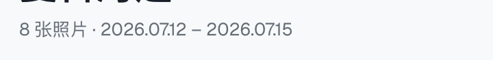
相册墙的相册卡
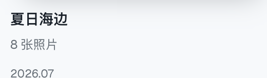
3D 扉页
「2026.07.12 – 2026.07.15」「2026.07」「2026/7/12 – 2026/7/15」三种写法；相册卡上的日期还单独占一行，字也最小。
建议
相册页标题下面
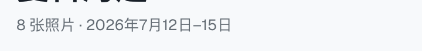
相册墙的相册卡
3D 扉页

中文统一成「2026年7月12日–15日」，同年同月时省掉重复部分；相册卡写成「8 张照片 · 2026年7月」，放在同一行。英文界面自动写成「Jul 12–15, 2026」。
三 · 看照片和相册页
7看大图：顶栏更干净，「设为封面」不用星星改动小
看照片时，屏幕上除了照片，其他东西越少越好；图标的意思要和大家的习惯一致。
现在
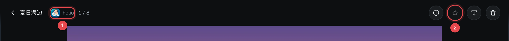
1看照片时顶栏还有 App 的 Logo 和名字，和照片抢注意力。
2☆ 在大多数软件里表示「收藏 / 喜欢」，这里却是「设为封面」，容易点错。
建议
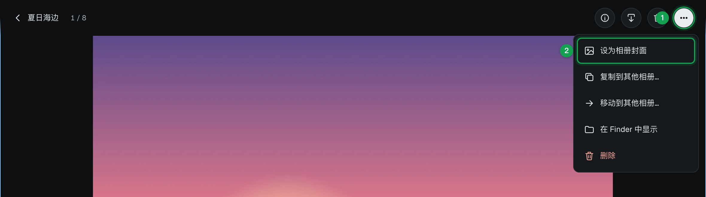
1去掉 Logo；更多操作收进「⋯」菜单。
2「设为相册封面」用文字写明，并顺便放上「复制 / 移动到其他相册」「在 Finder 中显示」。
注意：上一版（v2）定过「看大图时显示 Folio 字样」，这一项会改掉它，需要你拍板。
8按钮和选项写清楚改动小
不看说明也能知道每个控件是干什么的。
现在
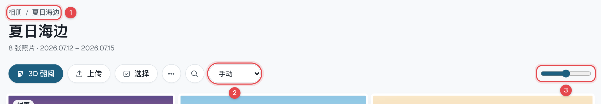
3D 翻阅右上角（默认、选第一项时）：
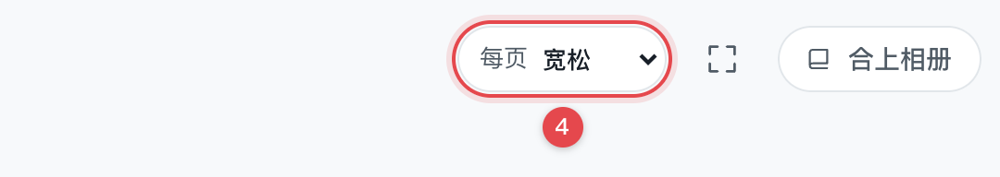
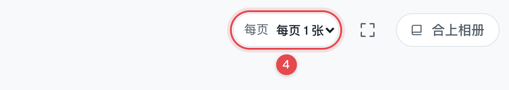
导出 PDF 对话框里的同一个设置：
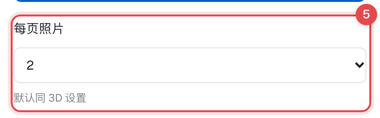
- 1「相册 / 夏日海边」和下面的大标题重复。
- 2下拉框只写「手动」，看不出这是排序。
- 3滑块没有任何说明，不知道是调缩略图大小。
- 4「每页 宽松」读不通；选第一项时变成「每页 每页 1 张」。
- 5同一个设置在导出 PDF 里又叫「每页照片 2」，三个地方三种叫法。
建议
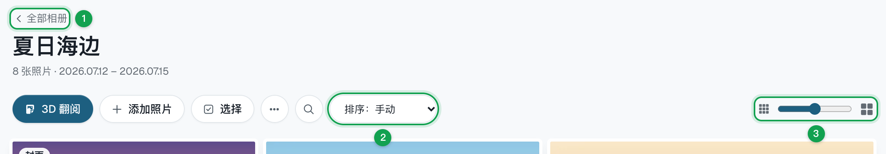
3D 翻阅右上角：
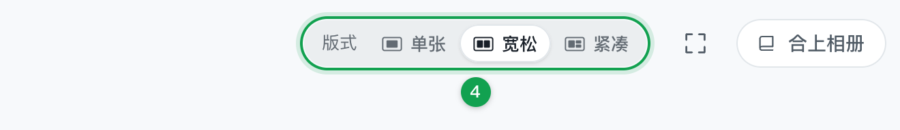
- 1换成「‹ 全部相册」返回链接。
- 2写成「排序：手动」。
- 3滑块两头加小格子 / 大格子图标。
- 43D 和导出 PDF 统一叫「版式：单张 / 宽松 / 紧凑」，配小图示。
四 · 像真正的桌面 APP
9标题栏合成一层，照片支持右键菜单改动中
用户会拿它和「照片」等系统自带 App 比；Mac 和 Windows 上的通用习惯要跟上。
现在
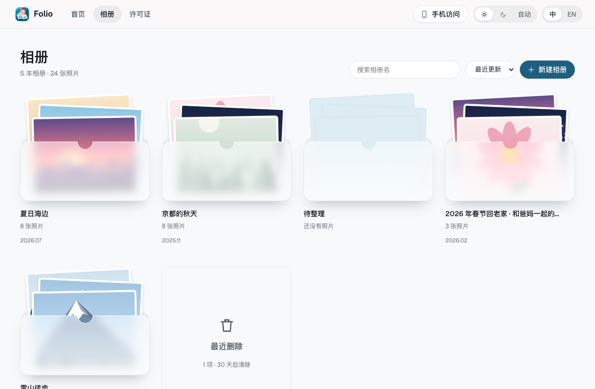
在照片上点右键：
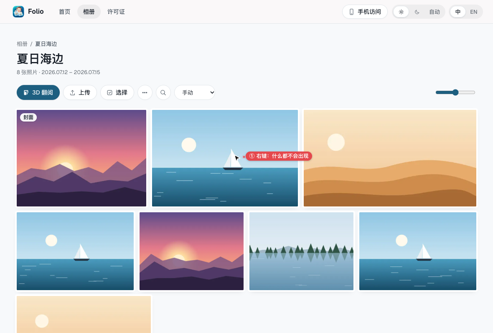
1系统标题栏下面又叠了一层 App 顶栏，白白占掉一条高度。
在照片或相册上点右键，什么都不会出现；Mac 菜单栏也只有「Folio / 编辑 / 窗口」三个菜单。
建议
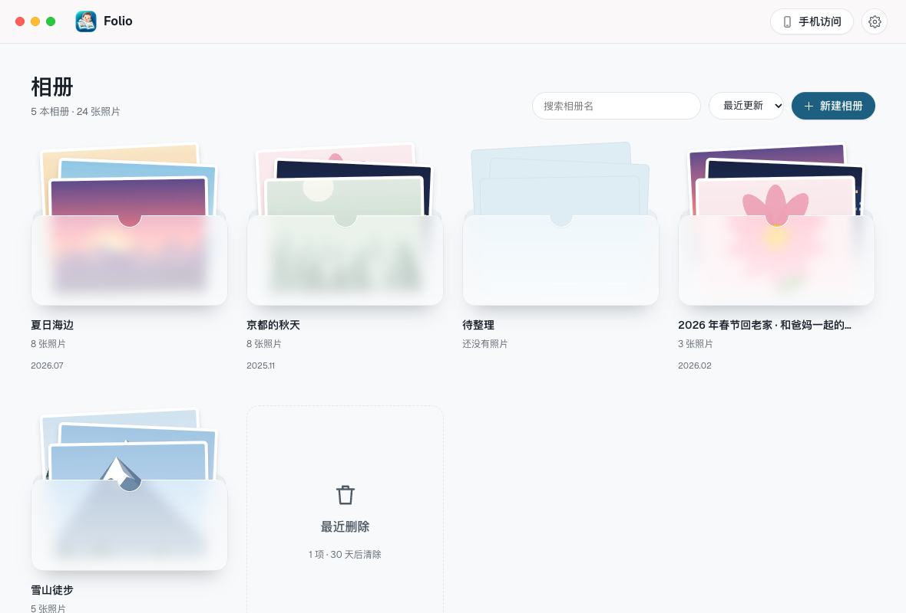
在照片上点右键：
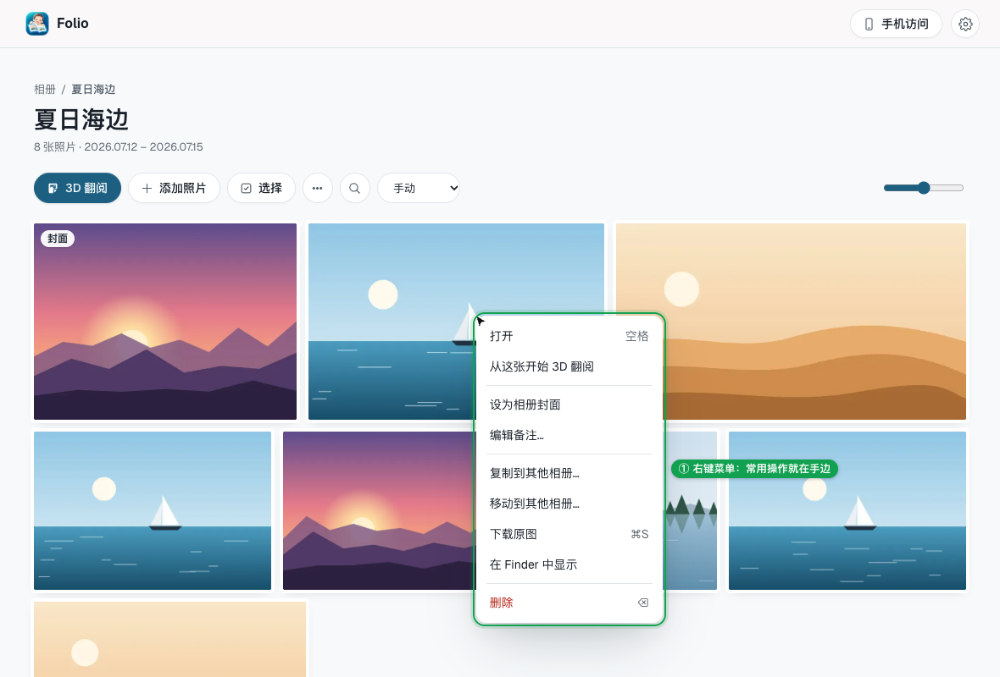
1标题栏和顶栏合成一层（Windows 上同理，最小化/关闭按钮放在顶栏右侧）。
照片和相册都有右键菜单；另外补上「文件 / 显示 / 帮助」菜单和快捷键，并记住窗口的大小和位置（这两点没有画图）。
10第一次打开：告诉用户怎么开始改动中 · 新增文件夹导入
新用户最需要知道的只有一件事：怎么把照片放进来。
现在
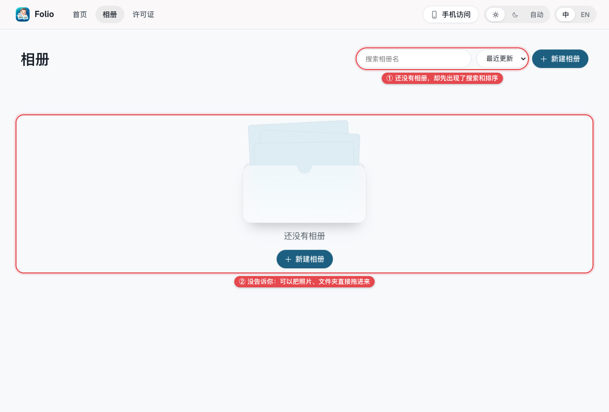
1一本相册都没有，页面上却先出现了搜索框和排序。
2只有一句「还没有相册」。没告诉你可以把照片直接拖进来，也不能一次导入整个文件夹。
建议
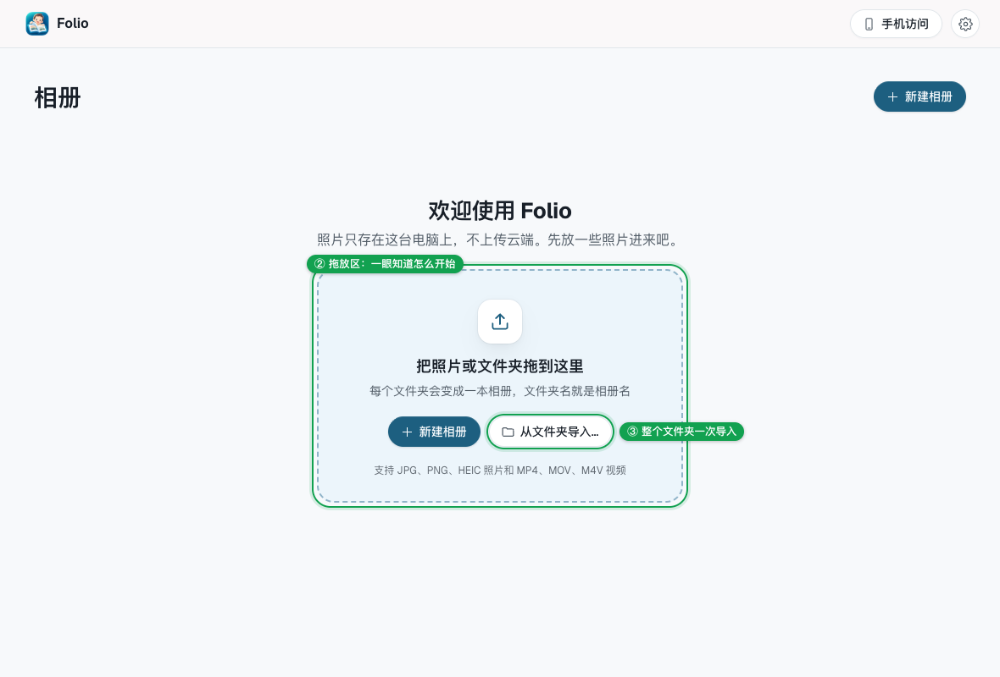
2欢迎语加一个大的拖放区：拖进照片或文件夹，一个文件夹自动变成一本相册（文件夹名就是相册名）。
3也可以点「从文件夹导入…」。没有相册时先不显示搜索和排序。
五 · 细节规范
11字号和圆角统一成一套规则改动中 · 面广但每处都很小
用户不会一个个去数，但会觉得「哪里不太齐」。下面是界面里实际用到的全部字号和圆角。
现在
19 种字号（下面的数字是用了几处）
20 种圆角
9–11 像素的小字用了 32 处，中文在这个大小下很难读；相邻的字号只差 1 像素，肉眼分不出层次，只会显得不齐。
建议
7 档字号，最小 12 像素
5 档圆角
每一档都有固定用途，新页面直接套用。改完后整体看起来会更「齐」，但每个页面看上去变化不大。
12手机上更好点改动小
手指比鼠标粗：苹果建议可点的地方至少 44 × 44。
现在
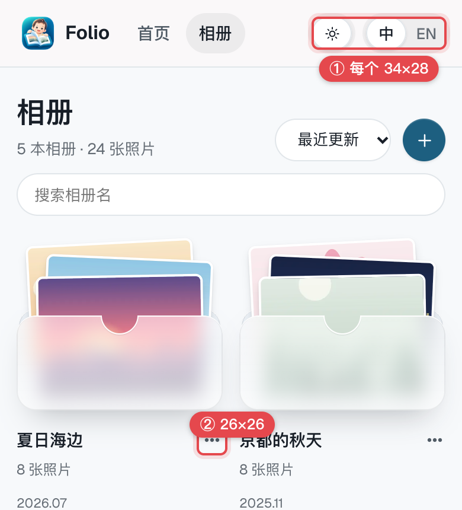
1主题、语言按钮每个只有 34 × 28。
2相册卡上的「⋯」只有 26 × 26，很难点准。
建议
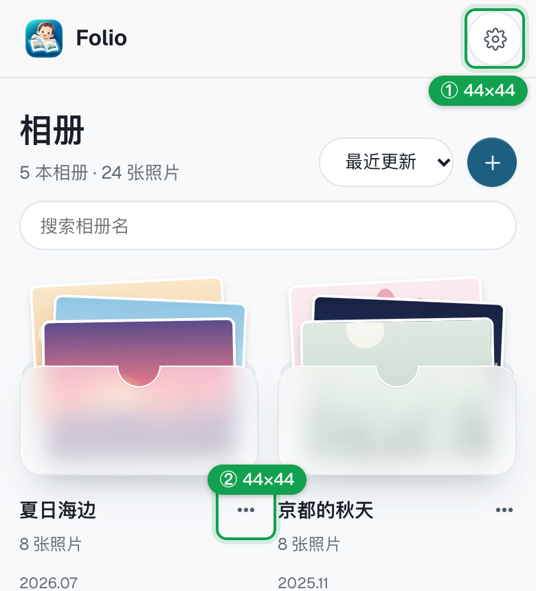
1主题和语言收进「设置」（见第 2 项）。
2「⋯」看起来不变，但可点的范围扩大到 44 × 44。
顺带修正几处读屏软件读出来的内容和屏幕上不一致的问题（例如照片上显示「封面」，读屏却读成文件名），方便视力不好的用户。